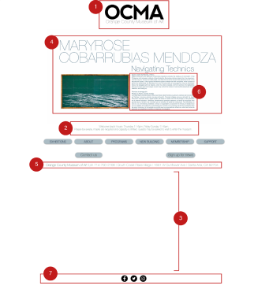
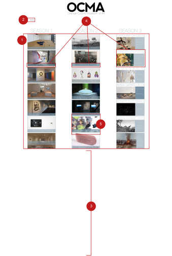

Orange County Museum of Art
Redesign the OCMA website using the UX/UI design process to empathize with site visitors and test iterations for a high-quality final mockup that reflects the museum's style.
Research
-

5 User Interviews
On our interviews, we asked the interviewees to browse the OCMA's website. And we have found out that users had frustration with texts that are too cluttered, difficult navigations, and uninteresting look.
-

27 Survey Responses
During our survey, we have observed that users visit museum's website to get museum's information(90%), to explore new exhibition(70%), and to learn about museum's programs and events(90%).
-

User Persona

-

Redlining
 The text was hard to read and white space could have been used more effectively. And the exhibitions page was not inspiring. It lacked consistent layout cross the three seasons.

Problem Statement
Stella who studies art needs updates and information on upcoming art exhibitions, because she wants to be always inspired.
During our research, we discovered that the OCMA’s current website does not showcase art in an accessible way. It is very difficult to read the text and access resources. Also, the current website does not reflect the design of their new upcoming building.
Therefore, we believe that redesigning OCMA’s website will help the users to easily understand the website and be interested and that we might be able to help users understand the website thoroughly.
We might do this by adding a whole new page where museum’s informations included and rearranging elements inside the website to make it more organized. Doing this will allow the OCMA’s website to be more informative and be more interesting.
Iteration

Lo-Fi Homepage Wireframe
Lack of detail on the homepage.

Hi-Fi Homepage Mockup
Added description to the images and highlighted current exhibitions as hero images.

Lo-Fi Exhibition Page Wireframe
Users were confused about the arrows and wanted to see the dates.

Hi-Fi Exhibition Page Mockup
Eliminated the arrows and included 'now on view' and 'past exhibitions' on the same page. And added the dates.
Before & After
Homepage
Exhibition Page
Visit Page


Prototype